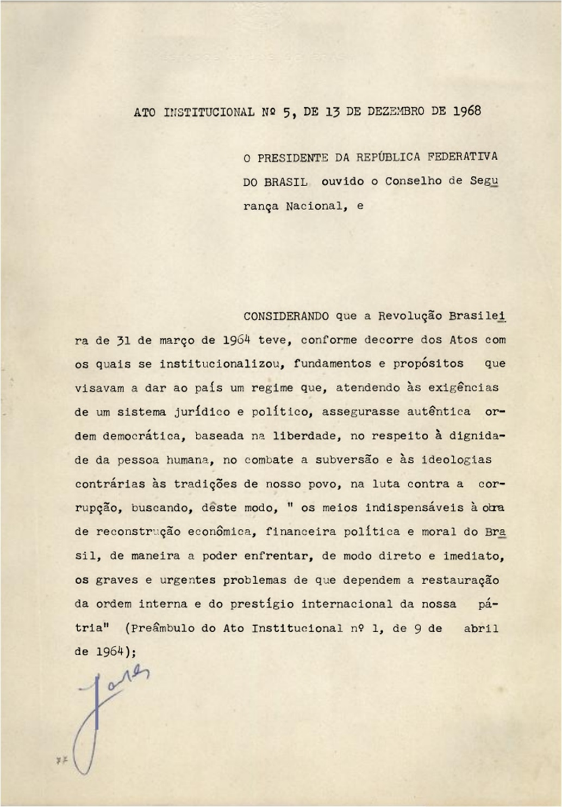
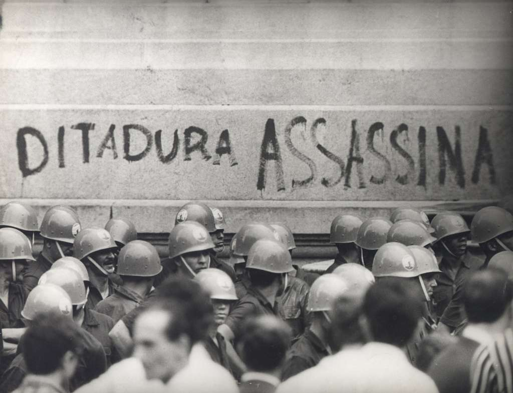

Trabalho de Geografia
Ditadura militar
1. Contexto e Origem (Antes de 1964)
O Brasil vivia um período de muita instabilidade política e econômica.
O presidente João Goulart (Jango) tinha proposto reformas sociais e trabalhistas que desagradaram a elite e os militares. Em plena Guerra Fria, crescia o medo do comunismo, e os EUA apoiaram os militares brasileiros
2. O Golpe Militar de 1964
Em 31 de março de 1964, tropas militares saíram de Minas Gerais em direção ao Rio de Janeiro.
João Goulart foi deposto e fugiu para o Uruguai. Os militares assumiram o poder dizendo que queriam “restaurar a ordem” e “combater o comunismo”.
️ 3. Início do Regime(1964-1968)
O primeiro presidente foi Castelo Branco. Os militares criaram os Atos Institucionais, que davam amplos poderes ao governo. Suspenderam direitos políticos e permitiram apenas dois partidos: ARENA (situação) e MDB (oposição controlada).

(Humberto de Alencar Castelo Branco)
4. Endurecimento do Regime (1968–1974)
Presidente: General Costa e Silva (1967–1969) e depois Médici (1969–1974). Ponto máximo da repressão: Em 1968, foi decretado o AI-5 (Ato Institucional nº 5), o mais autoritário. Permitia fechar o Congresso, cassar mandatos e prender opositores sem julgamento.
Consequências: Censura à imprensa, música, teatro e TV. Prisões, torturas e desaparecimentos de opositores. Surgimento da resistência armada (grupos guerrilheiros). Economia: “Milagre Econômico” — grande crescimento do PIB, mas com aumento da desigualdade social.
5. Abertura e Enfraquecimento (1974–1985)
O governo Geisel começou uma “abertura lenta e gradual” para a democracia. Em 1979, a Lei da Anistia permitiu o retorno dos exilados políticos.
Movimentos sociais, greves e partidos políticos voltaram a crescer. A crise econômica e a pressão popular enfraqueceram cada vez mais os militares.
🕊 Fim da Ditadura
No início dos anos 1980, o povo brasileiro começou a exigir o retorno das eleições diretas. Milhões foram às ruas no movimento “Diretas Já”, pedindo o direito de escolher o presidente pelo voto. Apesar de o Congresso não aprovar as eleições diretas naquele momento, a pressão popular foi tão grande que o regime militar acabou perdendo força. Em 1985, o Congresso elegeu Tancredo Neves, o primeiro civil depois de 21 anos de ditadura. Tancredo, porém, faleceu antes de assumir, e José Sarney tomou posse como presidente. Esse foi o marco do fim da ditadura militar e o início da redemocratização do Brasil.
Trabalho feito por:
Thales
Matheus
Miguel
Leandro
Obrigado a todos!